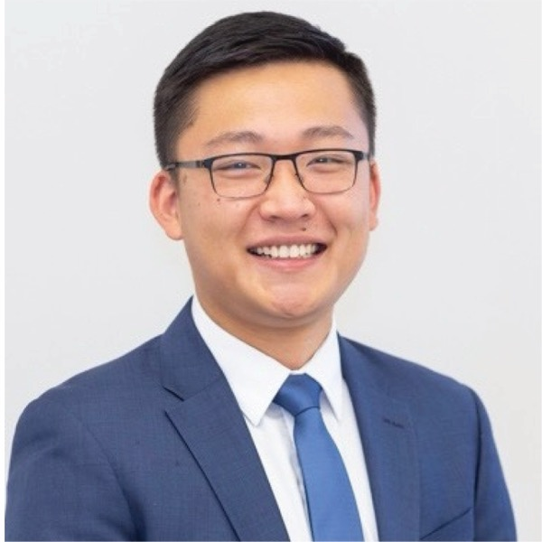

Hi, I'm Tong. I'm a physician-scientist currently completing residency at Stanford Pathology. I am most passionate about translating basic research into innovative diagnostics.
At least 19 ongoing clinical trials use CRISPR base editors. We invented a technology to sensitively detect their off-targets in cells. We additionally show how non-coding edits can be triaged for epigenetic dysregulation using deep learning.
Wang T, Jessa S, Marinov GK, Klemm S, Kundaje A, Greenleaf WJ. Sensitive, direct detection of non-coding off-target base editor unwinding and editing in primary cells. bioRxiv 2025.
Direct Methylation Sequencing (DM-Seq) is a fully enzymatic sequencing method that detects 5-methylcytosine (5mC) at single-base resolution. This work represents the technological foundation of two patents and a pre-seed diagnostic company ACE Genomics Inc.
Wang T, Fowler JM, Liu L, Loo CE, Luo M, Schutsky EK, Berríos KN, DeNizio JE, Dvorak A, Downey N, Montermoso S, Pingul B, Nasrallah M, Gosal W, Wu H, Kohli RM. DNA modifications enable direct enzymatic sequencing of 5-methylcytosine at single base resolution. Nature Chemical Biology 2023. 19, 1004–1012.
I discovered the new DNA base 5-carboxymethylcytosine (5cxmC) for the first time. Unexpectedly, I found that only a single point mutation in an endogenous methyltransferase safeguards the E. coli genome from creating 5cxmC from the trace metabolite carboxy-SAM (CxSAM).
Wang T and Kohli RM. Discovery of an Unnatural DNA Modification Derived from a Natural Secondary Metabolite. Cell Chemical Biology. 2021, 28, 1-8.